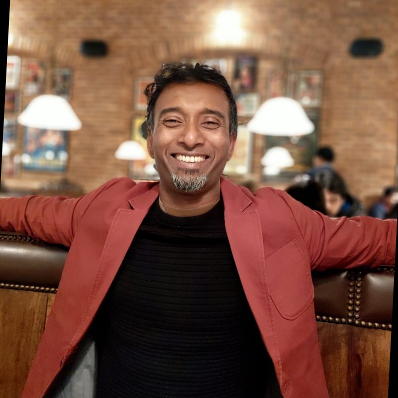

Sajan Nair
Summary:
- Almost 20 years of experience across diverse fields such as brand strategy, advertising, digital branded
content and entrepreneurship.
- Self-taught information technologist. Experience of learning new skills and executing projects based on
them.
- Experienced in managing teams across locations with logistical challenges.
- Possess excellent communication, presentation, interpersonal, teaming and people management skills.
Agaamin Technologies - Founder
- Learnt new technologies and developed bootstrapping skills
- CEO & Management Trainee.
- Dreaming and executing.
- Check out Agaamin
Eplay Digital Media
Work Profile: Producer, Client Relations and Operations
- New Business Development.
- Embracing Emergent technologies to solve client’s pain points.
- Everything from strategy to creative inputs to execution to final output.
- Ensuring profitability of the business and ensuring compliances.
- Billed around 300K to 350K USD annually.
- Check out our Work
Publicis India Ltd.(Jan 11-Aug 11)
Client Servicing Director. Brands Handled: HP Computers and Maruti Suzuki.
- Responsible for client portfolio in the range of $5 Million in Revenue.
- Ensuring the health of the business by focussing on client satisfaction and
- role of advertising in profitability.
- Uncover opportunities and drive business growth via thought leadership, category expertise and consistent
delivery of great work.
- Deepening client trust and broaden the agency’s role in the client’s organization.
- Be the expert on client’s business and industry including competition.
- Drive innovation, new programs and inspire the internal team and client.
- Showcase our work internally and externally.
Euro RSCG Advertising Pvt. Ltd. (Jan 09-Dec10)
Account Director, Brands Handled:Max New York Life Insurance and makemytrip.com
- Drive Brand Strategy and creative springboards.
- Establish and cultivate positive relationships with key decision-makers.
- Deep dive into my client’s business needs and objectives.
- New Business Development and study marketing needs of clients to upsell internal solutions.
- Overseeing implementation, delivery, and execution of Brand Campaigns.
- Ensuring exposure, training and upskilling of my team.
Ogilvy & Mather (Pvt.) Ltd. Jan ’07-Dec 08
Associate Account Director, Brands Handled: Dabur Amla Hair Oil, Vimal Gutka & Rajasthan Tourism
- Taking the lead role for all assigned client-facing interaction.
- Overseeing implementation, delivery, and execution of Brand Campaigns.
- Ensuring exposure, training and upskilling of my team.
Mudra Communications (Pvt) ltd (Oct-05-Dec 06)
Sr. Account Executive, Brands Handled: HBO and Dabur
- Managing Client Expectations.
- Briefing Creatives and ensuring timely delivery.
Enterprise Communications (Pvt) Ltd (Jun 04-Oct 05)
Management Trainee
Account management Logistics.
Timeline management.
Education
- Udemy: Full Stack Developer Course
- Google: Digital Marketing Specialist.
- EMPI Business School - Post Graduate Diploma in Marketing and Advertising
- BCom (Hons) from Calcutta University.
- British Council BEC Vantage- Corporate English Course.
Key Strengths & Achievements
- Adaptability to Change.
- Ability to work with in as well as lead a team.
- Ability and Interest to learn new skills.
- Best Student - Gold Medallist 2002-2004 PG, EMPI.
Other Interests
Martial Arts, Chess, Reiki Master, Meditation, Hobby Coding and Programming, Emerging Technologies like
Blockchain, AR/VR/Metaverse, Decentralised Web, Reading, Blogging, Public Speaking, Meeting New People,
Travelling, Deejaying, Films, Cricket & Music.